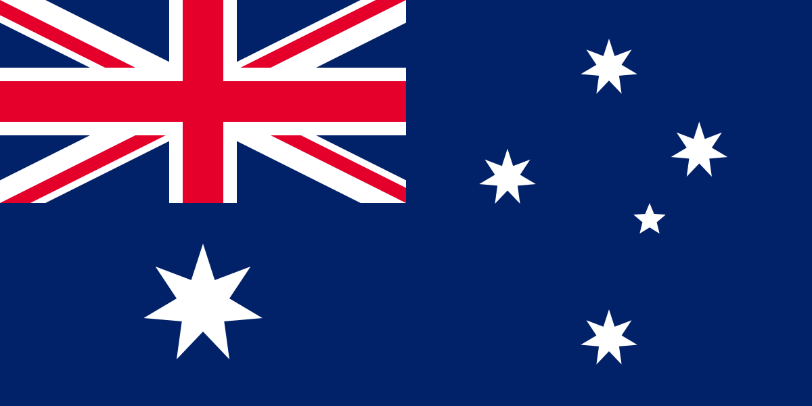
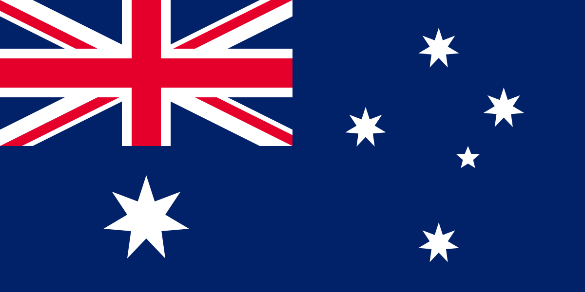

Sídney
Australia es un país rodeado por los océanos Índico y Pacífico. Sus ciudades principales: Sídney, Brisbane, Melbourne, Perth y Adelaida son costeras.
asdasd
Australia es un país rodeado por los océanos Índico y Pacífico. Sus ciudades principales: Sídney, Brisbane, Melbourne, Perth y Adelaida son costeras.

El país ocupa la principal masa continental de la plataforma llamada Sahul, además de algunas islas en los océanos Pacífico, Índico y Antártico. Los países más cercanos a Australia son Indonesia, Timor Oriental y Papúa Nueva Guinea al norte, las Islas Salomón, Vanuatu y la dependencia francesa de Nueva Caledonia al noreste, y Nueva Zelanda al sureste.
Los portugueses descubrieron Australia 300 años antes de la llegada del Capitán Cook

Los portugueses descubrieron Australia 300 años antes de la llegada del Capitán Cook
Australia es un país rodeado por los océanos Índico y Pacífico. Sus ciudades principales: Sídney, Brisbane, Melbourne, Perth y Adelaida son costeras.
asdasd